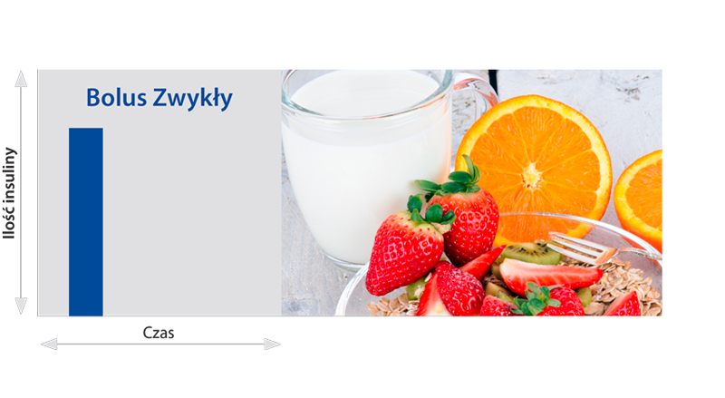

Pompa podaje cały zaprogramowany bolus od razu. Bolus Zwykły jest odpowiedni w przypadku posiłków węglowodanowych (np. owoców) oraz jako dawka korekcyjna podana w celu obniżenia wysokiego stężenia glukozy we krwi i powrotu do normoglikemii.
